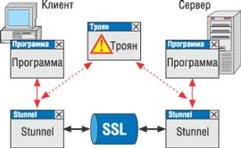
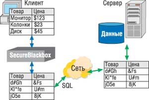

Денис Назаренко,
специалист по безопасности фирмы SprigSoft
denis@sprigsoft.com
Необходимость защиты данных приобрела особую актуальность в связи с бурным развитием Интернета и все большей "интернизацией" коммуникаций. Одно из популярных технических решений, обеспечивающих безопасность передачи данных, - протокол Secure Sockets Layer (SSL). Он был разработан компанией Netscape еще в 1994 г., а сегодня входит в число наиболее известных среди пользователей, поскольку интегрирован в большинство Web-браузеров и Web-серверов, в множество программных и аппаратных комплексов.
SSL - протокол, обеспечивающий аутентификацию и организацию шифрования на уровне сеанса. Он, по сути, создает между двумя сторонами (клиентом и сервером) защищенный канал связи, гарантирующий конфиденциальность. В функции SSL входит обязательная аутентификация сервера и необязательная - клиента (для противодействия постороннему вмешательству, подмене сообщений и прослушиванию в приложениях клиент-сервер). Все его функции работают на транспортном уровне модели OSI, и их исполнение не зависит от того, какой протокол применяется на прикладном уровне. Как следствие, протоколы прикладного уровня (HTTP, ftp, telnet и т. д.) прозрачно работают поверх SSL.
В настоящее время существует несколько модификаций протокола: SSLv2, SSLv3 и TLSv1. Из них наиболее распространена версия SSLv3, в которой исправлены некоторые недоработки предыдущих версий, добавлены спецификации, касающиеся применения расширенных механизмов Диффи-Хеллмана и Fortezza для обмена ключами, не-RSA сертификатов, а также цепочек сертификатов.
Другой часто используемый протокол безопасности - SSH (Secure SHell), по функциям напоминает SSL, но имеет и некоторые отличия. Основное из них относится к операционной среде: SSH создавался для обмена сообщениями с серверами на базе ОС Unix, где традиционно предусмотрена обязательная аутентификация обеих сторон.
Как это устроено
Чтобы лучше понимать, как работает протокол, рассмотрим упрощенную схему процедуры установления соединения клиента и сервера. Перед ее началом клиент формирует свое уведомление в виде сообщения, в структуру которого помещает информацию о версии протокола, а также некоторое случайное число - идентификатор сеанса, и поддерживаемые клиентом методы шифрования, и отсылает его серверу.
После обработки поступившего сообщения сервер выдает либо подтверждение на соединение, либо сообщение об ошибке. По структуре содержимое подтверждения аналогично уведомлению с той лишь разницей, что сервер на основании переданных клиентом данных "выбирает", какие методы сжатия и шифрования будут использоваться в данном сеансе.
Сразу после подтверждения сервер отправляет клиенту свой сертификат или цепочку сертификатов для аутентификации (подобная аутоидентификация необходима во всех случаях согласованного обмена ключами, за исключением тех, где применяется анонимный алгоритм Диффи-Хеллмана). Для обмена ключами используются разные типы сертификатов, в том числе и зависящие от алгоритмов шифрования, определенных при установке соединения. В большинстве приложений это серверный сертификат X.509v3. Как видно, на этом этапе клиент получает открытый ключ, которым он затем (при необходимости) шифрует сеансовый ключ.
После отправки собственного сертификата сервер (в зависимости от реализации процедуры аутентификации) может сформировать запрос сертификата клиента для аутентификации.
Завершает "знакомство" еще один цикл обмена сообщениями: сервер уведомляет клиента об окончании передачи подтверждения на установление сеанса связи и ждет ответа клиента, а клиент, получив это сообщение, должен проверить сертификаты сервера и послать тому завершающее сообщение, по получении которого сервер отвечает аналогичным завершающим сообщением. В этот момент протокол установления соединения заканчивает свою работу, и стороны могут приступить к передаче зашифрованных данных.
Перед прекращением сеанса связи клиент и сервер обычно тоже обмениваются завершающими сообщениями, после чего связь разрывается. Эти завершающие сообщения служат индикаторами того, что сеанс не подвергся атаке соединения методом обрыва связи. Кроме того, если перед разрывом связи такое сообщение было послано клиенту, то он может восстановить данный сеанс (процедура восстановления сеанса уменьшает время, расходуемое на повторное установление связи).
Защищенные транспортные протоколы - эффективное и проверенное средство для организации передачи информации по открытым каналам связи. Единственное, что надо учитывать при их использовании, - данные после транспортировки по сети расшифровываются и становятся доступными.
Клиент-серверные и сетевые приложения
Передача данных
В открытых сетях сегодня работают самые разнообразные приложения. Так, через Интернет можно заказывать билеты на самолет или бронировать места в кинотеатре. С одной стороны, новые технологии открывают перед нами огромные возможности и дают удобства, с другой - мы подвергаемся немалой опасности. Ведь передаваемые по сети данные могут быть прослушаны и изменены, так как большинство сайтов до сих пор используют для передачи данных незащищенные протоколы.
Помимо опасности похищения информации, передаваемой через Интернет, существуют еще серьезные угрозы, возникающие внутри локальной сети при передаче данных с клиентских машин на сервер. Если эти данные не зашифрованы, то прослушать их может любой. Как правило, этим злоумышленником оказывается служащий компании. У большинства сотрудников есть все необходимые для этого средства, достаточно установить парочку дополнительных программ, и можно наблюдать, какими данными оперируют коллеги. По статистике, в 70 случаях из 100 в несанкционированном доступе виновны именно инсайдеры.
Для обеспечения безопасности циркулирующей по сети информации достаточно использовать протокол SSL, причем даже если кто-то получит эти данные, на их расшифровку злоумышленнику понадобится немало времени.
Как же реализуется защита данных с помощью SSL? Самый дешевый способ - использовать для организации защищенного канала между двумя компьютерами специальное ПО, например, Stunnel (http://www.stunnel.org). Такой канал связи прозрачен для приложений, его использующих, но требует тонкой и умелой настройки. У данного решения есть и определенные недостатки; самый существенный из них - то, что злоумышленник может получить доступ к данным в ПК пользователя в момент передачи их в программу Stunnel (рис. 1). Тем не менее, если ПО клиента и/или сервера нельзя изменить (другими словами, когда есть исполняемые модули программ, а исходных текстов нет), такая защита лучше, чем никакой, хотя злоумышленник и имеет шанс получить доступ к данным в ПК клиента. Stunnel полезно устанавливать и в том случае, если поддержка SSL интегрирована в приложение клиента, а на стороне сервера по объективным причинам этого сделать нельзя. Не следует также забывать, что при работе Stunnel на сервере следует контролировать его защищенность. Однако система в целом будет защищена.
|  | Рис. 1. При обмене незашифрованными данными доступ к информации может получить посторонняя программа.
|
Более надежный способ защиты и клиента, и сервера - внедрение в приложения программных компонентов, обеспечивающих поддержку SSL "изнутри", например, SecureBlackbox (http://www.secureblackbox.com). Этот метод идеален при разработке собственных приложений. Если вы пишете приложение на заказ, то подобное интегрированное решение просто необходимо, так как никогда нельзя быть уверенным, будет ли безопасной та среда, где должно работать ПО. Да и репутация разработчика также зависит от того, насколько защищен выпускаемый им продукт.
Хотелось бы обратить особое внимание читателя вот на что: поддержку SSL можно и нужно использовать всегда, как при обмене данными через Интернет, так и внутри локальной сети. Стоит лишь оставить открытым хотя бы один канал передачи информации, рано или поздно случится так, что хакер получит к нему доступ, а далее... Самое главное правило защищенности: шифруйте соединения, особенно если система работает с конфиденциальными данными и даже передает их по сети. Это позволит защитить информацию не только от просмотра, но и от изменения.
Однако злоумышленника могут интересовать не только (и не столько) передаваемые по сети данные, сколько информация, хранящаяся на электронных носителях (жесткие диски, стримеры и т. д.). Доступ к ней атакующий может получить как со стороны сервера, так и от клиента.
Никогда нельзя быть точно уверенным в защищенности сервера. Несмотря на то, что производители ОС при обнаружении брешей в безопасности ПО выпускают патчи, известно, что установка "заплаток" не всегда спасает ситуацию. Поэтому для защиты баз данных (БД) на сервере, кроме встроенных защитных функций ОС, обычно задействуются дополнительные механизмы обеспечения безопасности.
Сегодня реально применяются два способа защиты БД. Первый заключается в закрытии доступа к данным средствами сервера БД, который авторизует пользователя, проверяет пароль и права на доступ. Однако такая схема защиты имеет свой недостаток - если атакующий получит доступ к серверу, он получит доступ и к БД.
Поясним это на примере. На одном компьютере с установленным сервером БД создаем базу данных и задаем пароль. На другом компьютере с установленным сервером БД тоже создаем БД с тем же именем, но с другим паролем. Копируем (путем замены) БД с первого компьютера на второй. Теперь можно получить доступ к БД первого компьютера, используя пароль второго. Дело в том, что информация о доступе к БД хранится не в самих таблицах БД, а в настройках сервера. Следовательно, если используется подобный сервер БД, защиту надо усилить.
Другой способ защиты данных - их шифрование. Некоторые серверы баз данных обладают функциями встроенного шифрования, и для них даже описаны специальные SQL-команды шифрования. Однако хотелось бы подчеркнуть, что шифрация замедляет работу и имеет свою специфику.
Если при работе с данными необходимо особо защитить какие-либо поля таблицы, а ваша БД не поддерживает шифрование, воспользуйтесь SecureBlackbox на стороне клиента. Зашифрованные значения заносятся в БД с помощью стандартных SQL-операторов (рис. 2).
|  | Рис. 2. Шифрование данных на стороне клиента и хранение их в зашифрованном виде.
|
Наиболее серьезно следует подойти к защите ПО, установленного на стороне клиента. Ясно, что пользователь не всегда профессионально разбирается в ИТ и потому может долго работать на ПК, зараженном троянской программой, и не замечать этого. Вывод: при разработке клиентского приложения необходимо исходить из того, что данный ПК может полностью контролироваться злоумышленниками.
Если клиентское приложение сохраняет какие-либо данные на диске, их нужно шифровать. Заметим, что компонент из состава SecureBlackbox обеспечивает прозрачное шифрование, т. е. его можно интегрировать в уже готовое ПО. Но кроме контроля тех данных, которые программа хранит на диске, необходимо внимательно следить за информацией, передаваемой по сети. Задайтесь вопросом: а всегда ли важные данные зашифрованы? Самая надежная защита будет обеспечена в том случае, если данные из программы поступают в сеть в зашифрованном виде.
Авторизация, аутентификация и полномочия
Авторизация и аутентификация - краеугольный камень системы безопасности. И здесь следует помнить, что при аутентификации пользователя применять короткий пароль или использовать в качестве пароля идентификационный номер сотрудника абсолютно недопустимо, поскольку такой пароль подбирается очень быстро. А вход в систему хакера с легальным паролем сводит на нет все усилия по построению криптографической защиты.
Рекомендуется выбирать пароль длиной более восьми символов и включать в него цифры. Естественно, запоминать такие пароли - нелегкая задача для пользователей. Но ее помогают решить внешние хранители паролей. Например, сейчас становится популярным применение USB-флэш-карт, на которых (в силу достаточного объема их памяти) можно разместить также информацию о пользователе, например, сертификат. Тогда только человек, имеющий собственную карту, сможет получить доступ к БД.
Сама архитектура многоуровневых приложений позволяет создать еще несколько барьеров на пути проникновения в систему. В зависимости от задач, решаемых конкретным сотрудником, можно установить дополнительные ограничения на доступ к БД - приписать пользователю полномочия.
Но это еще не все. Дополнительно повысить безопасность можно и за счет сегментации программ в зависимости от выполняемых операций. Для этого клиентские модули разрабатываются таким образом, чтобы они содержали "ограниченные операторы", - иными словами, изначально в теле программы ограничиваются операции, выполняемые большим числом сотрудников, степень ответственности которых за работу мала. Например, в задачу операционистов банка входит выписывание счета по требованию клиента. Значит, будущая программа должна делать только одну операцию - запрашивать счет, причем только одного человека. А у менеджера филиала может быть установлена более "продвинутая" версия ПО, которая вносит эти изменения в БД.
В качестве обобщенного метода поиска возможных проблем в системе безопасности можно рекомендовать простую схему:
- проанализируйте места хранения данных и пути их передачи;
- проверьте, остаются ли данные в какой-либо момент времени незашифрованными;
- если данные не зашифрованы, выясните, может ли теоретически кто-либо получить к ним доступ;
- если данные зашифрованы, выясните, не может ли случиться, что вся необходимая для расшифровки информация окажется у злоумышленника "под рукой".
* * *
Очевидно, что возможностей для повышения безопасности сетевых приложений немало, и уровень современных систем безопасности достаточно высок, чтобы гарантировать (в разумных пределах) защиту данных. Надо только правильно и вовремя использовать все доступные средства.
Источники дополнительной информацииhttp://www.stunnel.org/ - сведения о программе Stunnel; http://www.secureblackbox.com/ - сведения о наборе компонентов SecureBlackbox для шифрации; http://www.faqs.org/rfcs/rfc1321.html - официальная документация по MD5; http://www.faqs.org/rfcs/rfc3174.html - официальная документация по SHA-1; http://www.linuxjournal.com/article.php?sid=6131 - HOWTO: Exploring Diffie-Hellman Encryption; http://www.tropsoft.com/strongenc/des.htm - основы DES Encryption. |